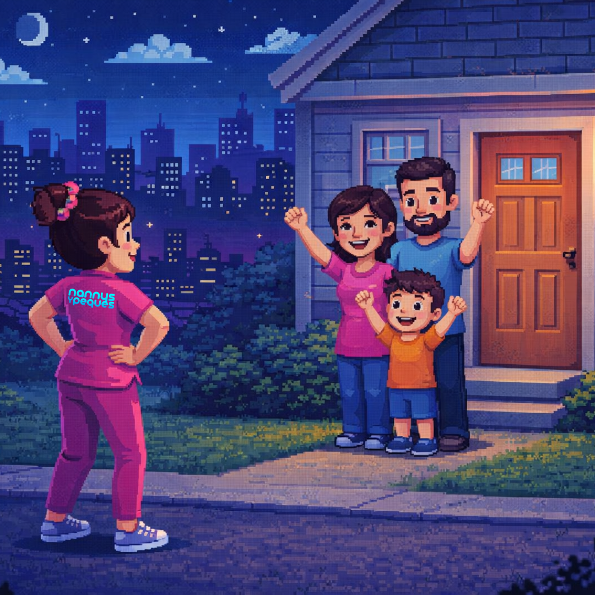

Acompañamos a las familias en las zonas de mayor crecimiento: Juriquilla, El Campanario, Jurica, Zibatá, Milenio III y Centro. Cuidado profesional con ADN poblano.
En el Bajío, las familias buscan excelencia. Nannys y Peques ofrece un sistema de cuidado que va más allá de la vigilancia; nos enfocamos en el desarrollo integral de tus peques en zonas residenciales como El Campanario.

"Buscamos mucho tiempo en Juriquilla y ninguna agencia nos dio la confianza que Nannys y Peques proyecta. Muy profesionales."
"El servicio de Neuronanny cambió la rutina de mis peques. Están más felices y aprendiendo mucho más."